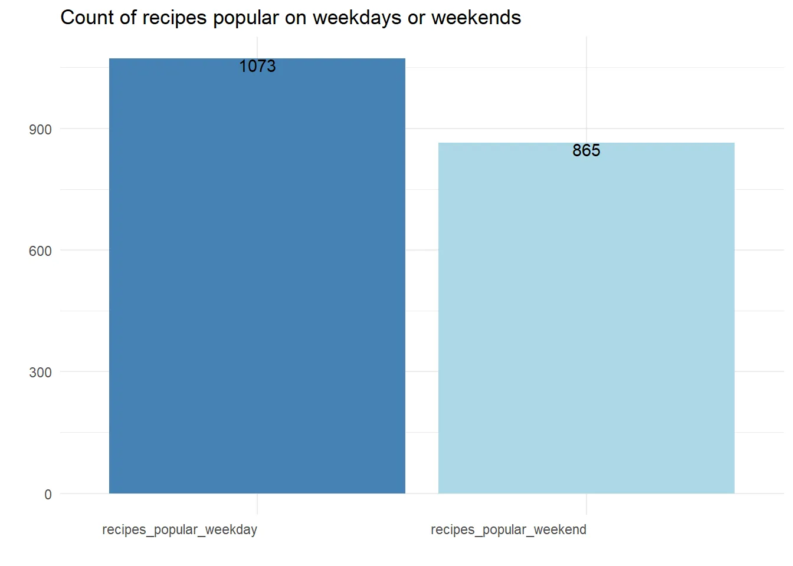
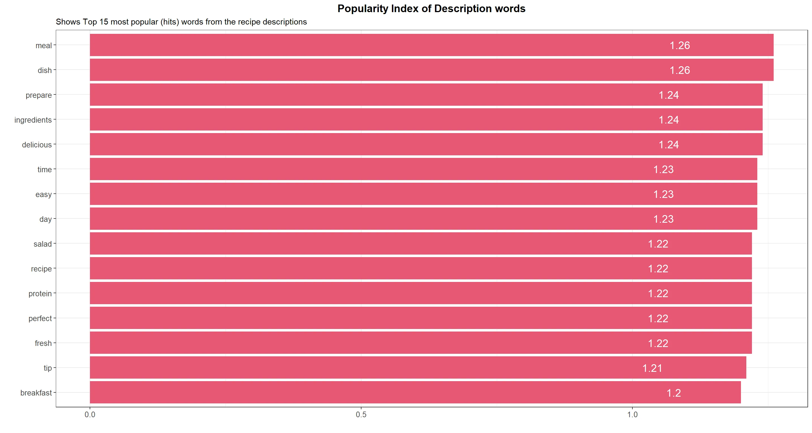

Introduction
In this post, we will analyze data extracted from a mobile application that offers users access to a wide range of recipes. Our objective is to extract valuable insights from this data to benefit the product team.
Can we identify a statistically significant disparity in the number of recipe views per session among PRO users across different primary platforms?
Data Cleansing and Preparation
- Our analysis will focus exclusively on customers classified as 'Pro.'
- Excluding Huawei as a platform due to its minimal traffic and non-significant status as a 'main platform.'
- Applying a filter to only consider the 'recipe.detail' event, assuming it signifies user interaction with the product.
- Eliminating any recipes lacking a valid recipe_id.
# Import necessary libraries
library(tidyverse) # For data manipulation and visualization
library(arrow) # For reading in Parquet data
library(lubridate) # For working with dates
# Filter out recipes without a recipe_id and consider only "pro" customers, excluding Huawei
filtered_recipes <- recipes %>%
filter(!is.na(recipe_id),
subscriptionstatus == 'pro',
platform != 'huawei',
name == "recipes.detail")Exploratory Data Analysis
# Import necessary libraries
library(patchwork) # For joining multiple plots together
# Calculate and visualize views per session by platform and date
plot1 <- recipes %>%
group_by(date, platform) %>%
summarise(views_per_session = n() / n_distinct(sessionid)) %>%
ggplot(aes(date, views_per_session)) +
geom_line(aes(color = platform), size = 1.5) +
geom_text(aes(label = round(views_per_session, 2)), vjust = -1) +
scale_color_manual(values = c("#0072B2", "#009E73")) +
labs(title = "Views per Session by Platform and Date",
x = "",
y = "") +
theme_minimal() +
theme(plot.title = element_text(size = 20, face = "bold", hjust = 0.5),
axis.text = element_text(size = 14),
axis.title = element_text(size = 16),
panel.grid.major = element_blank(),
panel.grid.minor = element_blank())
# Calculate and visualize views per session by platform
plot2 <- recipes %>%
group_by(platform) %>%
summarise(views_per_session = round(n() / n_distinct(sessionid), 2)) %>%
ggplot(aes(platform, views_per_session)) +
geom_bar(aes(fill = platform), stat = "identity", width = 0.5) +
geom_text(aes(label = views_per_session), vjust = 1, size = 6) +
scale_fill_manual(values = c("#0072B2", "#009E73")) +
labs(title = "Views per Session by Platform",
x = "",
y = "") +
theme_minimal() +
theme(plot.title = element_text(size = 20, face = "bold", hjust = 0.5),
axis.text = element_text(size = 14),
axis.title = element_text(size = 16),
panel.grid.major = element_blank(),
panel.grid.minor = element_blank())
# Calculate and visualize views per session by platform and overall goal
plot3 <- recipes %>%
group_by(platform, overallgoal) %>%
summarise(views_per_session = round(n() / n_distinct(sessionid), 2)) %>%
filter(!is.na(overallgoal)) %>%
ggplot(aes(x = overallgoal, y = views_per_session, fill = platform)) +
geom_bar(stat = "identity", position = "dodge", width = 0.7) +
geom_text(aes(label = views_per_session, group = platform),
position = position_dodge(width = 0.7), vjust = 1, size = 4) +
theme_bw() +
theme(axis.text.x = element_text(angle = 45, hjust = 1, size = 12),
axis.text.y = element_text(size = 12),
axis.title = element_text(size = 14, face = "bold"),
strip.text = element_text(size = 14, face = "bold"),
strip.background = element_rect(fill = "lightgray", colour = "black", size = 1),
legend.position = "right") +
scale_fill_manual(values = c("#0072B2", "#009E73")) +
labs(title = "Views per Session by Platform and Overall Goal",
x = "",
y = "")
# Combine the plots
combined_plots <- (plot1 + plot2) / plot3- There is a marginal variance observed between iOS and Android platforms when computing views per session.
- Sunday exhibits the highest user engagement, which gradually declines throughout the week, reaching its lowest point on Saturday.
- Both platforms demonstrate a strong preference for weight loss as the primary goal.
- However, given that this data encompasses only one week, it may not accurately reflect overall customer engagement.
Establishing Statistical Significance
To establish statistical significance between the two platforms, a sufficiently large sample is required. Consequently, we will assess the number of views per session at both the platform and user_id levels.
# Calculating average views per session on a user level for each platform
views_per_platform_session <- recipes %>%
group_by(platform, userid) %>%
summarise(views_per_session = n() / n_distinct(sessionid)) %>%
ungroup()
# Visualizing the distribution of our data
views_per_platform_session %>%
ggplot(aes(x = views, fill = platform)) +
geom_density(trim = FALSE) +
scale_fill_manual(values = c("#1a78ae", "#9c47a5")) +
labs(x = "Group", y = "Value", fill = "Group") +
facet_wrap(~platform) +
theme_bw() +
theme(
axis.line = element_line(size = 1),
axis.title = element_text(face = "bold"),
axis.text = element_text(size = 12, color = "black"),
legend.position = "bottom",
legend.title = element_blank(),
legend.text = element_text(size = 12),
panel.grid.major = element_blank(),
panel.grid.minor = element_blank(),
panel.background = element_blank()
)

# Load necessary package
library(homogeneity)
# Perform homogeneity of variance test
homogeneity_test <- homogeneity_test(views ~ platform, data = views_per_platform_session)
- The distribution of our data deviates from a normal distribution.
- The Levene's test provides substantial evidence indicating unequal variances between the two groups.
- Given the non-normal distribution and disparate variances, a t-test cannot be employed.
- An alternative approach for our analysis is the Mann-Whitney U test, which is adept at accommodating outliers, as in our scenario, and offers straightforward interpretation.
- The Mann-Whitney U test requires fewer assumptions compared to parametric tests like the t-test, which mandate normal distribution and equal variances.
Conducting the Statistical Test
# Subset the data for the two platforms
android_data <- views_per_platform_session %>%
filter(platform == "android") %>%
select(views) %>%
extract()
ios_data <- views_per_platform_session %>%
filter(platform == "ios") %>%
select(views) %>%
extract()
# Perform the U test
u_test <- my_mann_whitney_test(android_data, ios_data)
# Print the test results
print(u_test)
# Perform a statistical test using the provided data
test_results <- perform_rank_sum_test(android_data, ios_data)
# Print the test results
print(test_results)
The test outcome reveals a p-value of 3.003e-15, indicating a statistically significant difference between the two groups. The alternative hypothesis suggests that the true location shift (median difference) is not zero. Thus, we can infer that a significant disparity exists between the Android and iOS data groups regarding the number of views per session.
Additionally, we can employ the Hodges-Lehmann estimator to quantify the magnitude of the difference. This estimator, a non-parametric technique, enables us to compute the median difference between the two groups.
# Calculate an effect size using the provided data
effect_size <- calculate_effect_size(android_data, ios_data)
# Print the effect size
print(effect_size)
##
## Cohen's d
##
## d estimate: -0.006311648 (negligible)
## 95 percent confidence interval:
## lower upper
## -0.02708118 0.01445788Key Insights
- Our analysis reveals a statistically significant distinction in user engagement between iOS and Android users.
- However, the observed difference is minimal, potentially lacking practical significance or impact.
- The product team may choose to prioritize other factors that exert a more substantial influence on user engagement or conduct further investigations to understand the underlying reasons behind the marginal disparity between the two platforms.
Determining Recipe “Success“
- To gauge the popularity or success of a recipe, we will compute the geometric mean of both views per session and views per user.
- This approach assigns equal importance to both metrics while accommodating variations in their scales and highlighting recipes that demonstrate well-rounded performance across both measures.
- As a reference, the overall average popularity index stands at 1.22.
Data Preparation and Transformation
#loading our recipe usage data and creating week columns
recipe_usage <- read_parquet("data.parquet") %>%
mutate(wkday = wday(date,label= TRUE),
weekday_or_weekend = if_else(wkday %in% c("Mon","Tue","Wed","Thu","Fri"),"weekday","weekend"))
# Calculating usage metrics on recipe and weekday_weekend group level
df1 <- recipe_usage %>%
group_by(recipe_id,weekday_or_weekend) %>%
summarise(hits = sum(as.numeric(no_hits),na.rm = T),
sessions = sum(as.numeric(no_sessions),na.rm = T),
users = sum(as.numeric(no_users),na.rm = T),
views_per_session = hits/sessions,
views_per_user = hits/users) %>%
ungroup() %>%
mutate(popularity_index = sqrt(views_per_session*views_per_user)) %>% # Average of views_per_session and views_per_user will be our popularity index
mutate_if(is.numeric, ~round(.,2))
# Aggregating hits,sessions, and users on recipe level
df2 <- recipe_usage %>%
group_by(recipe_id) %>%
summarise(hits = sum(as.numeric(no_hits),na.rm = T),
sessions = sum(as.numeric(no_sessions),na.rm = T),
users = sum(as.numeric(no_users),na.rm = T))
# joining the two datasets together to get a final view
combined <- df1 %>%
select(recipe_id,weekday_or_weekend,popularity_index) %>%
pivot_wider(names_from = weekday_or_weekend,values_from = popularity_index) %>%
left_join(df2) %>%
rename(weekday_popularity_index = weekday,
weekend_popularity_index = weekend)Weekends vs Weekdays
We will consolidate our data to examine the proportion of recipes that exhibit higher popularity on weekends compared to weekdays, as well as vice versa.
# Calculate the count of recipes popular on weekdays and weekends
popular_recipes <- combined %>%
summarise(recipes_popular_weekday = n_distinct(recipe_id[weekday_popularity_index > weekend_popularity_index]),
recipes_popular_weekend = n_distinct(recipe_id[weekend_popularity_index > weekday_popularity_index])) %>%
mutate_if(is.numeric, ~ round(., 2)) %>%
pivot_longer(cols = everything(), names_to = "category", values_to = "count")
# Create a bar chart
ggplot(popular_recipes, aes(x = category, y = count, fill = category)) +
geom_bar(stat = "identity") +
geom_text(aes(label = count), vjust = 1) +
theme_minimal() +
theme(axis.text.x = element_text(hjust = 1),
legend.position = "none") +
labs(title = "Count of Popular Recipes on Weekdays or Weekends",
x = "",
y = "") +
scale_fill_manual(values = c("steelblue", "lightblue", "darkred", "pink"))

It is intriguing to note that over 50% of recipes garner greater popularity on weekdays than on weekends, yet the popularity index remains nearly identical for both recipe categories. Now, let's delve into the data on a daily basis to gain further insights.
Daily Fluctuations in Popularity Index
# Calculate popularity index by date
popularity_index <- recipe_usage %>%
group_by(date, wkday) %>%
summarise(hits = sum(as.numeric(no_hits), na.rm = TRUE),
sessions = sum(as.numeric(no_sessions), na.rm = TRUE),
users = sum(as.numeric(no_users), na.rm = TRUE),
views_per_session = hits / sessions,
views_per_user = hits / users) %>%
ungroup() %>%
mutate(popularity_index = sqrt(views_per_session * views_per_user)) %>%
select(date, wkday, popularity_index)
# Create a line plot
ggplot(popularity_index, aes(date, popularity_index)) +
geom_line(color = "steelblue", size = 1) +
geom_text(aes(label = wkday), vjust = -0.5, size = 5) +
theme_minimal() +
labs(title = "Popularity Index by Date",
x = "",
y = "") +
theme(plot.title = element_text(hjust = 0.5),
axis.text.x = element_text(angle = 45, hjust = 1),
panel.grid.major = element_blank(),
panel.grid.minor = element_blank())

Key Insights
It is worth noting that we observe a higher number of popular recipes on weekdays (1073 recipes) compared to weekends (865 recipes).
This discrepancy can be attributed to a seasonal pattern within the data, where popularity is at its lowest on Sundays (average popularity index of 1.20) but reaches its peak on Mondays (average popularity index of 1.23). As the week progresses, popularity gradually declines until it rises again on Saturdays (average popularity index of 1.23). For the sake of our analysis, let's assume this difference is significant. Potential reasons for this trend include:
Weekend vs. weekday mindset: Users may perceive Sundays as a day for relaxation, indulgence, or spending time with family, resulting in lower engagement with the fitness recipe app. Conversely, Mondays often represent the start of a new week and a renewed focus on healthy routines, leading to increased app usage.
Meal planning: Many individuals plan their meals for the week on Sundays and Mondays. As the week progresses, users may already have their meal plans in place, resulting in less time spent on the app.
Motivation: Users might feel more motivated to pursue a healthy lifestyle at the beginning of the week. However, as the week progresses, this motivation could wane, leading to decreased engagement with the app.
The product team could consider the following actions:
Sunday: Since Sundays demonstrate the lowest popularity, provide users with meal planning tools and meal prep ideas to help them prepare for the upcoming week. Offer healthy recipes that can be prepared in larger quantities and easily reheated or repurposed for multiple meals throughout the week.
Monday: Capitalize on the peak popularity observed on Mondays by emphasizing fresh starts and motivation. Feature a "Recipe of the Week" that aligns with users' dietary preferences and is easy to prepare.
Tuesday to Friday: Focus on providing quick and easy recipes for lunch and dinner, suitable for users with limited cooking time during the workweek. Include healthy meal options that can be easily packed for lunch or prepared in advance.
Saturday: As popularity increases again on Saturdays, consider offering healthy brunch ideas or dishes suitable for social gatherings.
Additional Factors Affecting Popularity
Categorization by Difficulty
# Calculate popularity index by difficulty
popularity_index <- recipe_usage %>%
group_by(difficulty) %>%
summarise(hits = sum(as.numeric(no_hits), na.rm = TRUE),
sessions = sum(as.numeric(no_sessions), na.rm = TRUE),
users = sum(as.numeric(no_users), na.rm = TRUE),
views_per_session = hits / sessions,
views_per_user = hits / users) %>%
ungroup() %>%
mutate(popularity_index = sqrt(views_per_session * views_per_user)) %>%
mutate_if(is.numeric, ~round(., 2))
# Create a bar plot
ggplot(popularity_index, aes(x = difficulty, y = popularity_index, fill = difficulty)) +
geom_col() +
geom_text(aes(label = popularity_index)) +
scale_fill_brewer(palette = "Set2") +
theme_minimal() +
theme(axis.text = element_text(size = 12),
axis.title = element_text(size = 14, face = "bold"),
title = element_text(size = 16, face = "bold")) +
xlab("") +
ylab("") +
ggtitle("Popularity Index by Difficulty") +
guides(fill = FALSE)
User Preference for Easy (1.22 popularity index) and Normal (1.23 popularity index) Difficulty Recipes suggests that the team should prioritize increasing the availability of such recipes within the app. These recipes could be prominently featured on the main page or recommended to users, in contrast to harder recipes that exhibit a lower popularity index of 1.15.
Relationship between Number of Cooking Steps and Popularity
# Calculate popularity index by steps
d1 <- recipe_usage %>%
group_by(steps) %>%
summarise(hits = sum(as.numeric(no_hits), na.rm = TRUE),
sessions = sum(as.numeric(no_sessions), na.rm = TRUE),
users = sum(as.numeric(no_users), na.rm = TRUE),
views_per_session = hits / sessions,
views_per_user = hits / users) %>%
ungroup() %>%
mutate(popularity_index = sqrt(views_per_session * views_per_user)) %>%
mutate_if(is.numeric, round, 2)
# Create scatter plot with line and area
d1 %>%
ggplot(aes(x = steps, y = popularity_index)) +
geom_point(aes(size = hits), color = "maroon") +
geom_line() +
geom_area(data = d1 %>% filter(steps %in% c(3, 4, 5, 6, 7)), aes(x = steps, y = popularity_index), alpha = 0.3) +
labs(x = "", y = "", title = "Popularity Index by Steps", subtitle = "Size of points by number of hits") +
theme_bw() +
theme(plot.title = element_text(hjust = 0.5, size = 14, face = "bold"),
axis.title.x = element_text(size = 12),
axis.title.y = element_text(size = 12),
axis.text.x = element_text(size = 10),
axis.text.y = element_text(size = 10),
legend.position = "none",
legend.title = element_blank(),
legend.text = element_text(size = 10)) +
coord_cartesian(ylim = c(1, 1.3))

Upon reviewing the popularity index in relation to the number of steps required to cook a recipe, it becomes apparent that recipes with 3-7 steps are more popular, with an average popularity index of 1.23. There could be various reasons why recipes with a lower or higher number of steps have lower popularity. Here are some potential explanations:
- Complexity: Recipes with too few or too many steps might be perceived as overly simple or excessively complex. People may prefer recipes that provide a moderate challenge while still being manageable to follow.
- Time: Recipes with too few or too many steps could also involve insufficient or excessive preparation time, respectively. Individuals may favor recipes that are quick and easy to follow, while still yielding delightful results.
- Variety: Recipes with too few or too many steps might lack diversity in terms of flavors and ingredients. People may prefer recipes that strike a balance in flavors, textures, and incorporate a variety of ingredients to keep things interesting.
Exploring Portion Count
# Calculate popularity index by portion count
modified_recipe_usage <- recipe_usage %>%
group_by(portioncount) %>%
summarise(hits = sum(as.numeric(no_hits), na.rm = TRUE),
sessions = sum(as.numeric(no_sessions), na.rm = TRUE),
users = sum(as.numeric(no_users), na.rm = TRUE),
views_per_session = hits / sessions,
views_per_user = hits / users) %>%
ungroup() %>%
mutate(popularity_index = sqrt(views_per_session * views_per_user)) %>%
mutate_if(is.numeric, round, 2) %>%
top_n(15, hits)
# Create scatter plot with point size scaled by hits
ggplot(modified_recipe_usage, aes(x = portioncount, y = popularity_index)) +
geom_point(aes(size = hits), color = 'darkred') +
geom_line() +
labs(x = "Portion Count", y = "Popularity Index", title = "Popularity Index by Portion Count", subtitle = "Point size scales with hits") +
theme_bw() +
theme(plot.title = element_text(hjust = 0.5, size = 14, face = "bold"),
axis.title.x = element_text(size = 12),
axis.title.y = element_text(size = 12),
axis.text.x = element_text(size = 10),
axis.text.y = element_text(size = 10),
legend.position = "none",
legend.title = element_blank(),
legend.text = element_text(size = 10)) +
scale_x_continuous(breaks = seq(1, 30, 1))

Recipes within the 1-4 portion count range demonstrate the highest popularity, with an average popularity index of 1.23. Several factors may contribute to this phenomenon:
- Smaller households: Since many households consist of fewer individuals, recipes with smaller portion sizes tend to be more appealing.
- Individual preferences: Users may prefer cooking smaller portions to accommodate their personal tastes or dietary requirements.
- Meal preparation and planning: Smaller portion sizes can be convenient for users who engage in meal prep and planning, allowing them to prepare meals for one or a few days without experiencing food waste or compromising freshness.
- Ease of scaling: Recipes with smaller portions are often easier to scale up or down, enabling users to adapt them to their specific needs.
Are Longer Recipes with Lengthy Cooking Times Less Popular?
# Filter and process recipe usage data
modified_recipe_usage <- recipe_usage %>%
filter(preparationtime < 200) %>%
group_by(preparationtime) %>%
summarise(hits = sum(as.numeric(no_hits), na.rm = TRUE),
sessions = sum(as.numeric(no_sessions), na.rm = TRUE),
users = sum(as.numeric(no_users), na.rm = TRUE),
views_per_session = hits / sessions,
views_per_user = hits / users) %>%
ungroup() %>%
mutate(popularity_index = sqrt(views_per_session * views_per_user)) %>%
mutate_if(is.numeric, round, 2) %>%
top_n(10, popularity_index)
# Create scatter plot with point size scaled by hits
ggplot(modified_recipe_usage, aes(x = preparationtime, y = popularity_index)) +
geom_point(aes(size = hits), color = 'darkred') +
geom_line() +
labs(x = "Minutes", y = "Popularity Index", title = "Popularity Index by Preparation Time (Minutes)", subtitle = "Point size scales with hits") +
theme_bw() +
theme(plot.title = element_text(hjust = 0.5, size = 14, face = "bold"),
axis.title.x = element_text(size = 12),
axis.title.y = element_text(size = 12),
axis.text.x = element_text(size = 10),
axis.text.y = element_text(size = 10),
legend.position = "none",
legend.title = element_blank(),
legend.text = element_text(size = 10)) +
ylim(c(1.16, 1.5)) +
scale_x_continuous(breaks = seq(5, 200, 10))

Recipes with a cooking time of 25 minutes or less or less than 50 minutes exhibit higher popularity (1.25 popularity index) based on both their popularity index and the number of hits they receive. To enhance visual clarity and eliminate unnecessary noise, we have excluded outliers with cooking times exceeding 200 minutes.
Exploring the Impact of Recipe Tags on Recipe Success by Unnesting
# Process and visualize top 15 tags by popularity index
top20_rec <- recipe_usage %>%
separate_rows(tags, sep = ",") %>%
group_by(tags) %>%
summarise(hits = sum(as.numeric(no_hits), na.rm = TRUE),
sessions = sum(as.numeric(no_sessions), na.rm = TRUE),
users = sum(as.numeric(no_users), na.rm = TRUE),
views_per_session = hits / sessions,
views_per_user = hits / users) %>%
ungroup() %>%
mutate(popularity_index = sqrt(views_per_session * views_per_user)) %>%
mutate_if(is.numeric, round, 2) %>%
top_n(15, popularity_index) %>%
ggplot(aes(x = reorder(tags, popularity_index), y = popularity_index)) +
geom_bar(stat = "identity", fill = "#b20238") +
geom_text(aes(label = popularity_index), hjust = 5, size = 3.5, color = "white") +
coord_flip() +
labs(x = "", y = "", title = "Popularity Index of Top 15 Tags") +
theme_bw() +
theme(plot.title = element_text(hjust = 0.5, size = 14, face = "bold"),
axis.title.x = element_text(size = 12),
axis.title.y = element_text(size = 12),
axis.text.x = element_text(size = 10),
axis.text.y = element_text(size = 10),
legend.position = "top",
legend.title = element_blank(),
legend.text = element_text(size = 10))
# Process and visualize bottom 15 tags by popularity index
bottom20_rec <- recipe_usage %>%
separate_rows(tags, sep = ",") %>%
group_by(tags) %>%
summarise(hits = sum(as.numeric(no_hits), na.rm = TRUE),
sessions = sum(as.numeric(no_sessions), na.rm = TRUE),
users = sum(as.numeric(no_users), na.rm = TRUE),
views_per_session = hits / sessions,
views_per_user = hits / users) %>%
ungroup() %>%
mutate(popularity_index = sqrt(views_per_session * views_per_user)) %>%
mutate_if(is.numeric, round, 2) %>%
top_n(-15, popularity_index) %>%
ggplot(aes(x = reorder(tags, popularity_index), y = popularity_index)) +
geom_bar(stat = "identity", fill = "#0d1137") +
geom_text(aes(label = popularity_index), hjust = 5, size = 3.5, color = "white") +
coord_flip() +
labs(x = "", y = "", title = "Popularity Index of Bottom 15 Tags") +
theme_bw() +
theme(plot.title = element_text(hjust = 0.5, size = 14, face = "bold"),
axis.title.x = element_text(size = 12),
axis.title.y = element_text(size = 12),
axis.text.x = element_text(size = 10),
axis.text.y = element_text(size = 10),
legend.position = "top",
legend.title = element_blank(),
legend.text = element_text(size = 10))
# Combine the top and bottom plots
top20_rec + bottom20_rec

Drawing Insights from the Order of Tags, from Most to Least Popular:
- Casseroles, meat, and soup emerge as the top three tags, indicating that users prefer substantial and satisfying meals.
- The tag 'lunch' signifies users' interest in quick and convenient recipes suitable for midday meals.
- Popular tags such as 'high protein,' 'low fat,' and 'low calorie' suggest that users prioritize health-conscious choices and seek recipes that align with their dietary needs.
- The presence of multiple calorie tags (e.g., 500kcal, 400kcal, 300kcal) indicates users' preference for lower-calorie recipes that can assist in maintaining a healthy weight. However, extremely low-calorie options (e.g., 50kcal, 100kcal) might be less appealing, as they may not provide sufficient satiety, while excessively high-calorie recipes (e.g., 700kcal) may also be less favored.
- Tags such as 'clean eating' and 'detox' demonstrate popularity, indicating users' interest in incorporating healthier food choices into their diets.
- Tags related to baking and desserts appear towards the end of the list, suggesting that users prioritize nutritious meals over indulgent treats.
- Interestingly, 'breakfast' tags are less popular compared to 'dinner' and 'lunch,' possibly due to time constraints in the early morning.
Exploring Recipe Descriptions for Further Analysis
# Load necessary libraries
library(tidytext)
library(stopwords)
# Remove punctuations and numbers from description
recipe_usage <- recipe_usage %>%
mutate(description = str_replace_all(description, "[^[:alpha:][:space:]]", ""),
description = str_replace_all(description, "\\d+", ""))
# Create a tidy text data frame
tidy_description <- recipe_usage %>%
select(recipe_id, description, no_hits, no_sessions, no_users) %>%
unnest_tokens(word, description) %>%
anti_join(stop_words) %>%
filter(!is.na(word))
# View the top 15 most popular words
tidy_description %>%
group_by(word) %>%
summarise(hits = sum(as.numeric(no_hits), na.rm = TRUE),
sessions = sum(as.numeric(no_sessions), na.rm = TRUE),
users = sum(as.numeric(no_users), na.rm = TRUE),
views_per_session = hits / sessions,
views_per_user = hits / users) %>%
ungroup() %>%
top_n(15, hits) %>%
mutate(popularity_index = (views_per_session + views_per_user) / 2) %>%
mutate_if(is.numeric, round, 2) %>%
ggplot(aes(x = reorder(word, popularity_index), y = popularity_index)) +
geom_bar(stat = "identity", fill = "#e75874") +
geom_text(aes(label = popularity_index), hjust = 5, size = 5, color = "white", bold = TRUE) +
coord_flip() +
labs(x = "", y = "", title = "Popularity Index of Recipe Description Words", subtitle = "Top 15 most popular (hits) words from recipe descriptions") +
theme_bw() +
theme(plot.title = element_text(hjust = 0.5, size = 14, face = "bold"),
axis.title.x = element_text(size = 12),
axis.title.y = element_text(size = 12),
axis.text.x = element_text(size = 10),
axis.text.y = element_text(size = 10),
legend.position = "top",
legend.title = element_blank(),
legend.text = element_text(size = 10))

- Meal and dish are commonly used words that imply users are looking for a full, satisfying meal, rather than just a snack or side dish.
- Prepare and ingredients suggest that users are interested in learning how to cook and create new dishes from scratch.
- Delicious implies that taste is an important factor in recipe selection, which is not surprising since the ultimate goal of cooking is to create tasty meals.
- Time and easy suggest that users are looking for recipes that are not too time-consuming or complicated to prepare.
- Day implies that users may be interested in recipes that are suitable for a particular time of day, such as breakfast, lunch, or dinner.
- Salad and protein suggest that users may be interested in healthy recipes that incorporate fresh ingredients and provide balanced nutrition.
- Perfect and fresh imply that users are looking for recipes that are high-quality and satisfying.
- Tip suggests that users may be interested in learning cooking techniques and tricks to improve their skills.
Conclusion
This analysis provides insights into the dynamics of a real-world product analytics project, emphasizing the generation of actionable insights from the data. Rather than a generic exploratory data analysis, the focus here is on driving specific actions from stakeholders based on our analysis.
Recommendations for Each Day of the Week:
Sunday: As Sundays exhibit lower popularity, consider providing users with meal planning tools and meal prep ideas to help them prepare for the upcoming week. Offer healthy recipes that can be prepared in bulk, facilitating reheating or repurposing for multiple meals throughout the week.
Monday: Capitalize on the peak popularity on Mondays by emphasizing fresh starts and motivation. Feature a "Recipe of the Week" that aligns with users' dietary preferences and is easy to prepare.
Tuesday to Friday: Cater to users with limited cooking time during the workweek by focusing on quick and easy recipes for lunch and dinner. Include healthy meal options that are convenient for packing lunch or preparing in advance.
Saturday: Responding to the increased popularity on Saturdays, consider offering healthy brunch ideas or dishes suitable for social gatherings.